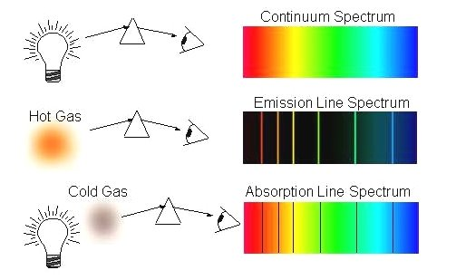

Coding Overview
The code I used on each of these spectrometers can be found on their pages. This page is an overview of what all the code needs to accomplish. The way that you execute it will vary based on your detector and computer (Raspberry Pi/Arduino/etc).
Data Collection Code
The main things that a data collection code needs to do are:
- Initialize/detect the camera
- Check the storage on your device so it stops the code before it starts overriding data
- Change exposure/gain until the image is within a specified range
- Save an image with a name (usually relating to the time)
- Save a .txt file with the camera settings and timestamps (if wanted)
- Immediately start running when powered
- Reboot if camera connection lost
Data Analysis Code
The main steps in spectra analysis are:
- Cut a strip out of the spectrum to analyze
- Index the data into pixel position on the x axis
- Use known calibration lines to get wavelengths
- Map pixel positioin to wavelength
- Create an absorption/emission graph